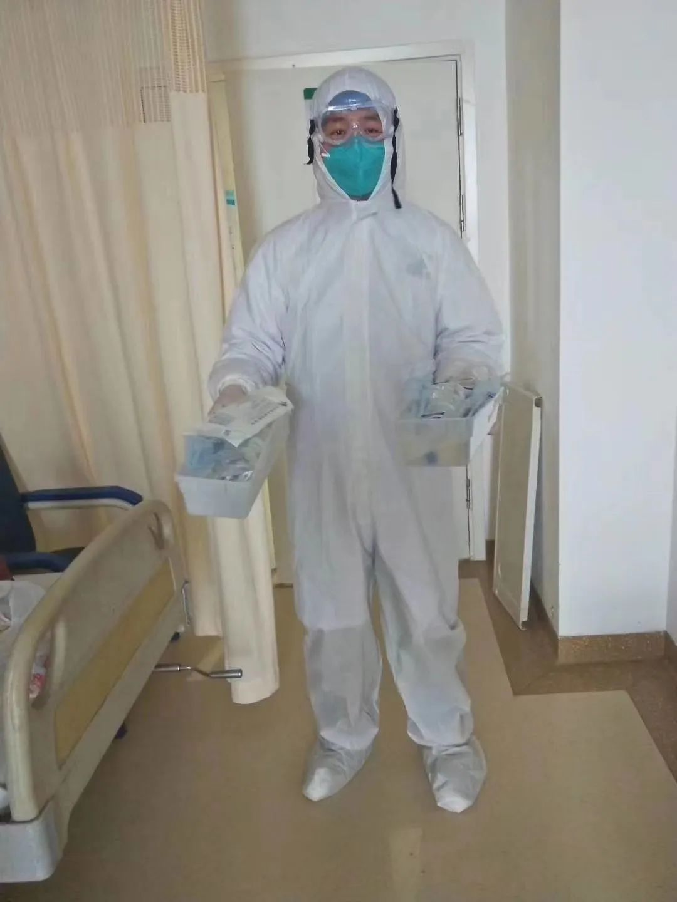

6楼6床的病人走了 | 深度报道
原文链接 备份链接 记者/梁婷 实习记者/周缦卿 陈威敬 胡琪琛 编辑/石爱华 宋建华 彭银华在住院期间留下的照片（图片来自人民日报） 如果没有疫情，彭银华会是一位幸福的新郎，一个准备迎接新生命的父亲。 29岁的彭银华去年正式成为江夏区第 …

彭银华的照片下摆满菊花。中青报·中青网记者 王鑫昕/摄
中国青年报客户端武汉2月22日电
作者 王鑫昕 孙庆玲
编辑 张国
彭银华医生走了。
因感染新冠肺炎，2020年2月20日21时50分，他在武汉金银潭医院去世，年仅29岁。
2月21日，在他所供职的武汉市江夏区第一人民医院的一间会议室里，同事们捧着菊花向这位以身殉职的年轻医生告别。他还没来得及使用的结婚纪念照被投射在幕布上，成了遗照。
“吃了你的喜糖，却没能参加你的婚礼。”一位同事在旁边的笔记本上留言，“心里一直在想你会好起来，却没想到……”
“青蜂侠”视频
按照原本的计划，彭银华和妻子要在2月1日——农历正月初八这天举行婚礼。他已经邀请了科室同事们“热闹一下”。办公桌抽屉里还放着没发出的请柬。婚礼只是仪式，这对年轻夫妇已经领了结婚证，孩子在妈妈肚子里有6个月了，同事们和他开玩笑说，再不办婚礼就要变成3个人了。
跟疫情粗暴打断的所有事情一样，这场婚礼不得不暂时取消。1月21日，彭银华所在的呼吸与危重症医学科3病区被列为第二批投入收治“不明原因的病毒性肺炎”的住院隔离病区。当晚，彭银华的同事李英璞值班，她记得一晚上收治了40位患者，第二天再来上班时，100多张床位几乎满了。
“随着疫情的升级，他主动说，大家工作都很忙，他就不去办婚礼了。”江夏区第一人民医院呼吸与危重症医学科3病区主任陈浩向记者回忆。
“当时任务非常重，老百姓蜂拥而至，我们如果不把病人尽可能地收进来，他们就会流到社会上去，又会导致疾病的蔓延。”陈浩说，“那几天，我们所有的医生吃住都在医院里面。”
看到眼前形势，有些医务人员已经有些不好的预感，有人直接打电话给家人，说自己可能得在医院过年了。
病房里，彭银华和同事们一样，接收病人、办理住院、开医嘱，还要安抚惊慌的病人，忙得连轴转。他一度连续值班长达48小时。

疫情防控期间彭银华的工作照。赵莹/供图
“当时的状况是，如果有一个人休息一下，就意味着别人更累。” 李英璞说，像彭银华这样的热心人，更是冲在了前面。在她印象中，即便平时，无论医生还是护士，只要说“彭银华，来搭把手”，他就会放下可以暂缓的手头工作来帮忙。
在早期的忙乱中，不少医务人员被病毒击中。1月23日开始，彭银华出现低烧、咳嗽症状。同事们高度警觉，1月25日给他做了检查，医学影像显示是病毒性肺炎，但“冠状病毒核酸检测阴性”，也“没有看到明显的感染病灶”。
第二天，彭银华仍然不舒服，同事让他再去查一次肺部CT。“这次就感染到了。”陈浩说。
直到今天，同事们也无法回溯彭银华是在哪一天、在什么场合被病毒入侵的。呼吸与危重症医学科护士长赵莹说，那段时间收治的疑似病人太多，不知道是哪里感染的。
1月30日晚，由于病情没有得到控制，反而逐渐加重，彭银华被转入金银潭医院重症监护病房。
但病情仍然反复，有时会传来病情稳定的消息。李英璞记得，2月2日那天，彭银华早餐吃了两碗青菜瘦肉粥。“我们觉得这是好事，说明他在好转，大家都鼓励他。”
到2月9日，彭银华病情又加重了，血氧饱和度下降。2月10日，李英璞听说他已接受插管治疗。
赵莹也牵挂着这位年轻的同事。有一次她问彭银华想不想喝牛奶，得到回复：“如果方便，就给我带点吧。”这让她感觉情况好转了。彭银华还在微信里对同事说，我一定要坚持，我还有没出生的小孩。
怀有身孕的妻子也在给他加油打气。在澎湃新闻提到的一张微信聊天截图中，妻子对他说：“记得我永远在你身边陪着你、爱着你，还有宝宝，我们一起等你回来。”
“谢谢老婆关心，我一定会更加努力，早点回去的。”在这段发生在2月8日的对话中，正在经历艰难治疗的彭银华仍然乐观。

彭银华的新婚照。赵莹/供图
为了救治彭银华，院方曾考虑采用血浆疗法，为他注射新冠肺炎康复者捐献的血浆，但第一批血浆血型未能匹配。2月12日找到了与他匹配的200毫升康复期血浆，但他接受注射后，病情仍在恶化。
2月20日晚，彭银华经抢救无效去世。
一个微博账号首先披露了彭医生去世的消息。李英璞一度不相信这是真的。“谁都接受不了。我们知道这个病肯定会死人，但从来没想到会是身边的朋友，从来没想到他会走得那么快。”

同事的留言。中青报·中青网记者 王鑫昕/摄
那天晚上，有人彻夜未眠，有人发朋友圈悼念他，有人则把头像换成了点亮的蜡烛。在江夏区第一人民医院呼吸与危重症医学科，值班的同事们甚至很难找到完整的为他默哀的时间——争分夺秒救治病人的工作仍在继续。
“我们也会怕，但是我们不会退。”赵莹说，“有人说‘我不怕’，我说你真的不怕吗？你是圣人吗？其实不是不怕，而是当进入到那个环境，看到了病人，我们都忘记了害怕。”
（本文由中国青年报独立出品，首发在中国青年报客户端及头条号，加入树木计划。）
中国青年报·中国青年网出品

觉得好看请点这里
原文链接 备份链接 记者/梁婷 实习记者/周缦卿 陈威敬 胡琪琛 编辑/石爱华 宋建华 彭银华在住院期间留下的照片（图片来自人民日报） 如果没有疫情，彭银华会是一位幸福的新郎，一个准备迎接新生命的父亲。 29岁的彭银华去年正式成为江夏区第 …
原文链接 备份链接 “ 据楚天都市报微信公号消息，彭银华原本打算正月初八举办婚礼，但因为疫情发展，彭银华决定坚守在一线。而婚礼的请柬，还放在办公桌抽屉里，没来得及分发。 ” 2020年2月20日晚，武汉市江夏区第一人民医院/协和江南医院发 …
原文链接 备份链接 澎湃新闻记者 温潇潇 因在抗击疫情一线感染新冠肺炎，2月20日21时50分，武汉市江夏区第一人民医院（又称“协和江南医院”）呼吸与危重症医学科三病区的医生彭银华，在武汉市金银潭医院去世，年仅29岁。 2月21日，在江夏 …
原文链接 备份链接 澎湃新闻记者 王选辉 实习生 刘宇丹 2月19日晚，北京朝阳医院副院长童朝晖、北京地坛医院感染二科主任医师蒋荣猛、中南大学湘雅医院感控科主任吴安华等三位中央指导组医疗救治组专家，就新冠肺炎重症救治召开新闻发布会，介绍了 …
原文链接 备份链接 以下文章来源于新闻晨报 ，作者孙立梅 [新闻晨报 一网打尽新闻晨报当日重要新闻详细报道、晨报读者活动](#) 孙立梅/周到上海客户端 2月13日，上海市公安局金山分局以涉嫌妨害传染病防治罪，对故意隐瞒真实行程的新冠肺炎 …